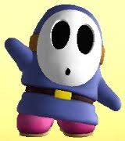
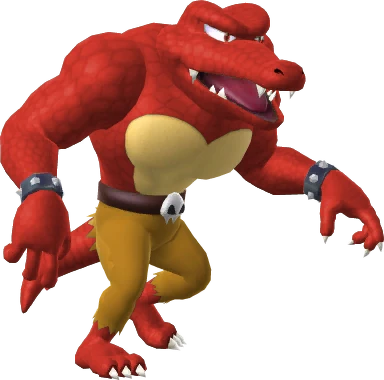
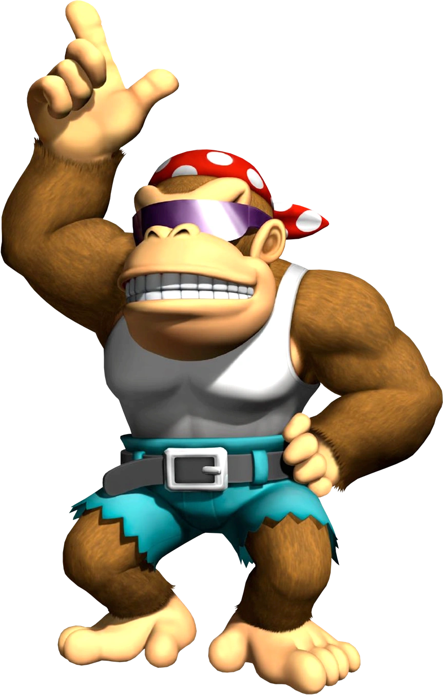
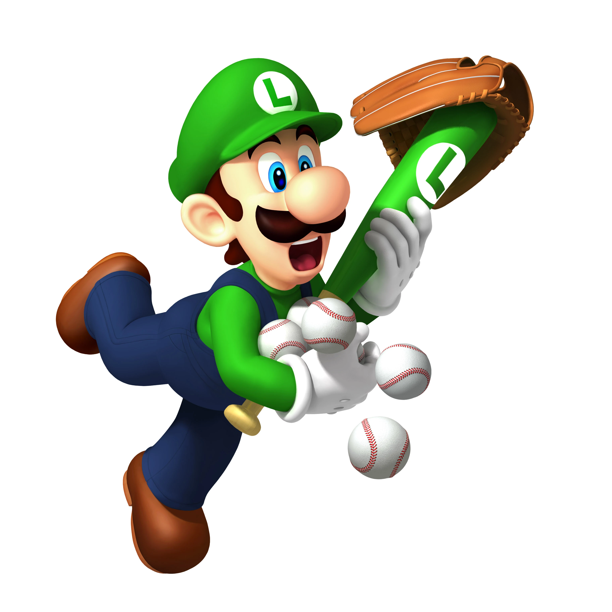

The Top 4 Greatest Players
Coming in at the 4th spot on our list is Blue Shy Guy! Blue shy guy is one of the most iconic players on the team. He played a mean defense on second base, getting some really good diving catches.
While you may think his capabilities stop at defense, you would be wrong, because not only was he an execptional defensive player, he was a realiable base hitter. He was never the heaviest hitter on the field, but even with that in mind, he consitently hit singles and doubles earning him a spot on this list. Whenever it was his turn to bat, everyone knew what to expect. While he may not be at the top of this list he still has made a big impact on the teams history.
The 3rd best player in the history of the Luigi Knights is Red Kritter. Red Kritter was a menace. He has good defense and even better offense! It is always exciting when he steps up to the plate
Red Kritter is the heaviest hitter of the Kritter colors, and the Kritters are known for their spectacular offense. It is almost guarenteed that a homerun is hit in every game he plays. This doesn't limit him on defense either, just like shy guy he has a phenomanal diving catch. Most players will put him on shortstop or second base because of his diving capabilities. He also has a strong throwing arm as well so he can through balls quickly to other bases making second base a great location for Red Kritter.
Funky Kong is one of the best and most fun players on this list, earning him the second place spot on the team. He is the best offensive player in the history of the Knights and is always a fun player to watch.
Funky Kong is the second best offensive kong to pick. The only Kong better at hitting is DK and he is a team captain. In the early days of the game he was a must pick candidate because you could not pick more than 1 team captian. Even without this rule he is still one of the best players to pick in the game.
You cannot have a team without a great team captian like Luigi! He may not have been the heaviest hitter but he was still good at hitting singles and doubles consitently. This green plumber has made his way into the hearts of many during the duration of the series.
Luigi has been the main pitcher for the entire history of the Luigi Knights. He has thrown some great pitches as well throughout the series. This is part of what has him as a number one pick is his incredible defense and great offense. Something about him is able to tie the whole team together. That is what lands this green plumber at the top of the list in my opinion.
Navagation Section
To learn more about every team in the game, Click Here!